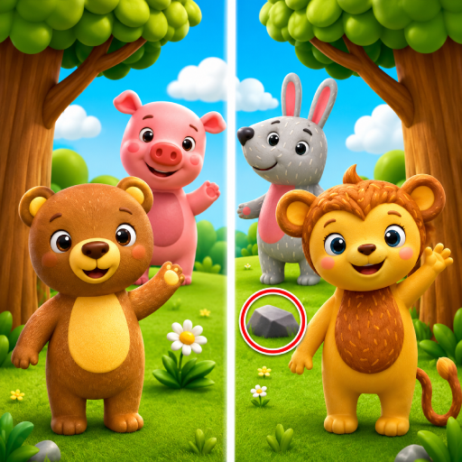

FABAY GAMES / PUBLISHED ANDROID GAME

Kids Spot the Difference
Spot fun differences! A brain game to boost kids' focus and observation.
Observation through picture puzzles
Gameplay
Two similar illustrations invite players to look closely and tap the differences. Familiar themes such as animals, toys, nature and food give the puzzles a friendly visual setting.
Design & development focus
Hints and a simple touch interface support careful observation. Most levels allow play without time pressure, and the experience is designed for both phones and tablets.
A LOOK INSIDE
Game screenshots.


Screenshots and game information from the official Google Play listing ↗.